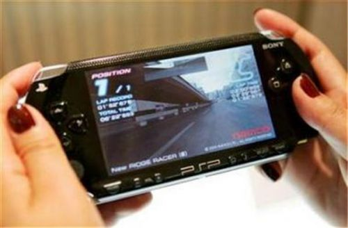

时间：2016-04-21
提及掌机，在长达数十载的产业发展历史中也有一段属于掌机的辉煌时期。但是近两年掌机的发展貌似并非没有以往那么美好，索尼PS Vita掌机逐渐走向没落，越来越多的新兴游戏硬件开始呈现在大众眼前，市场中取而代之的是游戏带给我们的精彩。因此，在掌机游戏市场处境十分尴尬的背景下，行业内关于掌机未来的言论便再次喧嚣尘上。

文/刘娈
掌机游戏遇阵痛 索尼PS Vita逐渐没落
作为掌机游戏发展不可忽视的中坚力量，日本掌机游戏行业可谓是广受业界以及玩家关注。曾几何时，索尼旗下PSP掌机不知承载了多事少年的青春热血，广受游戏玩家追捧，但是现如今日本掌机游戏的辉煌好像也只是成为过去。
根据市调机构Media Create今年4月份公布数据报告显示，4月13-19日索尼PSV销售量较前一周下滑14% 至1 万5,419 台，连续第4 周业绩呈现出下滑趋势;一直至今年6月份，索尼PSV的销量才达到1056万台。相信大伙都知道索尼全新掌机PSV 发布于2011年12月17日，也就是经过长达三年半的时间PSV的销量才破千万，与上一代PSP销量相比较这是一个极其惨淡的数字。
可见 ，市场中一系列数据已经表明索尼PS Vita逐渐走向没落成为事实。因此，行业内唱衰掌机的声音也风起云涌，大波自称行业资深人士的从业者开始唱衰掌机游戏，那么在此背景下，就意味着掌机游戏终究走向灭亡呢?索尼PSV走向没落的原因有哪些呢?掌机游戏作为80、90后的经典，的确值得我们思考一番。
日前，英国伦敦举办的大型玩家游戏交流会EGX 2015圆满落下帷幕。本次游戏交流会人山人海，大批的玩家涌入现场，为了不错失任何一次好的品牌传播的机会，大批的游戏厂商也席卷而来，其中硬件大厂索尼更是如此。本次会上索尼不仅展示了自家新的产品，针对掌机的发展以及PSV没落也作为了回应。
针 对PSV的没落，日本索尼全球工作室总裁吉田修平吉田修平说，“大家都有智能手机，在手机上玩游戏也很方便。而且，大部分都是‘免费’的，至少下载免 费。”整句话意思表明PSV的没落以及掌机市场的尴尬处境都归是手机游戏造成。事实真的如此吗?笔者认为此事或许另有蹊跷。
PSV没落纯属咎由自取 内容成掌机复兴的关键
不可否认，智能手机硬件的不断升级以及大屏化创造了移动游戏发展一个良好的环境。但是索尼PSV的衰败并不仅仅只是在于此，与任天堂的3DS系列掌机销量相比较，索尼的PSV毫无疑问已经被甩出三条大街远。
据日本游戏市场统计机构Media Creates公开了一份统计报告现实，截止6月25日PS Vita在日本国内的累计销量为4,000,728台。而于此同时，任天堂(Nintendo)的任天堂3DS系列游戏机(包括3DS、3DS LL、new 3DS、new 3DS LL)在日本国内的累计销量已达1880万台左右。虽说它的发售日期比PS Vita早10个月，但是索尼PSCV的销量是绝不能与3DS相提并论的。同为掌机游戏，人家能够做好做大，可见问题还是出在索尼自家身上。
上 文记叙在EGX 2015大型玩家游戏交流会上索尼已经知道手机游戏均是免费，既然知道是免费为何还要一味作死，延续了游戏售价高昂的做法呢!在模式上，索尼依旧还是 与国内移动游戏内购的商业模式背道而驰，过分依耐游戏前期购买的商业模式便是索尼PSV衰败的因素其一。另外，在硬件成本上索尼PSV不仅延续了以往 PSS高昂的售价做法还更是固执地采用专属存储卡设计，使PSV成本一再攀升。
更值得注意的是，索尼PSV在游戏内容上也毫无创新。目前 PSV上销量达到50万以上的游戏有16个，100万以上有4个。而反观任天堂3DS上，销量达到200万以上的游戏却有18个，突破1000万的游戏更 是存在三个。任天堂掌机能够大获全胜，其内容便是其中不容小藐的大功臣。
可见，掌机的内容才是真正决定掌机成功的关键所在。手机的崛起只是掌机衰败的外因，索尼PSV的衰败更是如此。在硬件与内容存在隐患的情况下，PSV被时代所抛弃实属理所当然。
手机无法取代掌机 谈论灭亡或许还为时尚早
纵观现如今掌机市场，掌机游戏巨头寥寥无几。索尼作为推动掌机游戏发展的巨头之一，一旦沦陷势必将会影响其市场的发展，掌机开始没落也似乎合情合理，但是行业就此谈论掌机灭亡或许还为时尚早。
就现阶段而言，智能手机的功能(操作，图像追求，传统游戏核心)上还尚未还达到掌机的标准，核心玩家对于掌机的需求依然存在。另外，智能机主要打开的是以往掌上娱乐设备所没有的非玩家市场。虽说目前用户还有重叠，但是准确地说是再做了一块蛋糕而不是蚕食原有的。
简单来说，掌机的未来就如同主机游戏未来一般。在较短的时间内PC机无法完全替代主机，同理，手机也无法完全替代掌机。
Copyright © 2016-2017 www.yundrive.net 云驾科技 版权所有 辽ICP备17001181号


 在线咨询
在线咨询 在线咨询
在线咨询 024-67790442
024-67790442